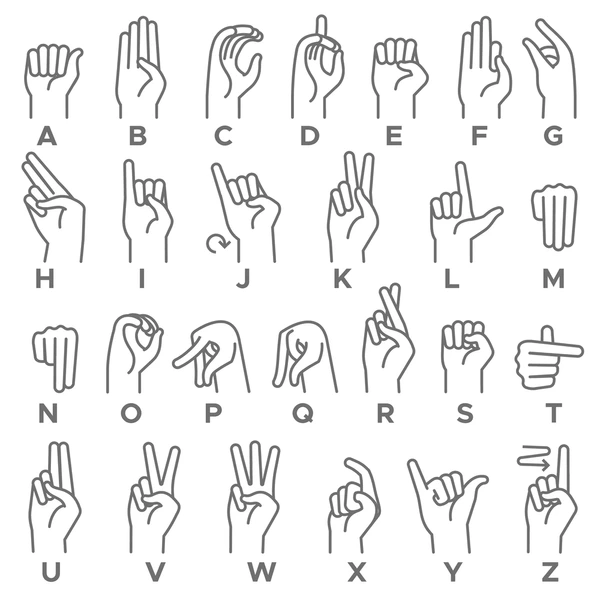

Cargando clasificador de MobileNet. Espere un momento...
Alfabeto

Instrucciones
Cargar
Si ya tienes un modelo guardado, puedes cargarlo con este botón. Debe ser un archivo JSON.
Entrenar
Para entrenar el modelo, debemos realizar los siguientes pasos:
- Seleccionar la letra que deseas entrenar. Por ejemplo, la letra A.
- Presionar el botón de entrenar y realizar el gesto de la letra A.
- Repetir el paso 2 varias veces, hasta que el modelo aprenda a reconocer la letra A.
- Repetir el proceso hasta que el modelo aprenda a reconocer todas las letras.
Para agregar una palabra, se debe realizar lo siguiente:
- Ingresar la palabra en el campo de texto y realizar el gesto de la palabra.
- Presionar el botón de aprender varias veces, hasta que el modelo aprenda a reconocer la palabra.
- Agregar todas las palabras que se deseen, repitiendo el proceso anterior.
Guardar
Una vez que el modelo ha aprendido a reconocer todas las letras, podemos guardarlo con este botón. El modelo se guardará en un archivo JSON.